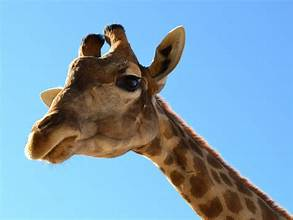

Jirafa: Alza el título indiscutible del animal terrestre más alto de nuestro planeta, una maravilla de la evolución que deambula con elegancia por los paisajes de la sabana africana. Su anatomía está dominada por un cuello kilométrico que le permite ramonear las hojas más tiernas y nutritivas en la copa de las acacias, las cuales arranca con la ayuda de una lengua azulada y prensil extremadamente resistente a las espinas, complementado por un sistema circulatorio único que evita que sufra mareos al bajar la cabeza.